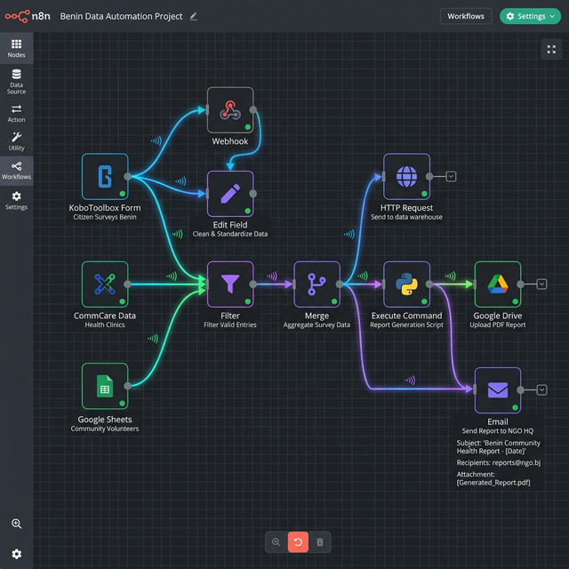
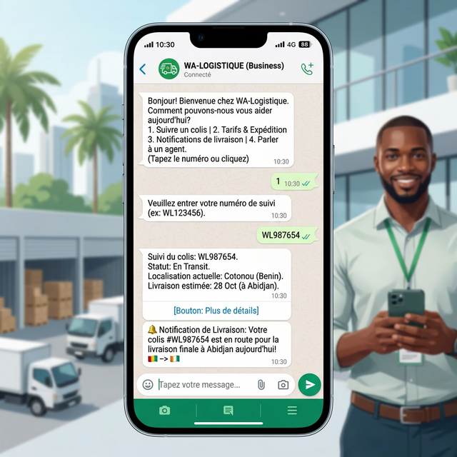
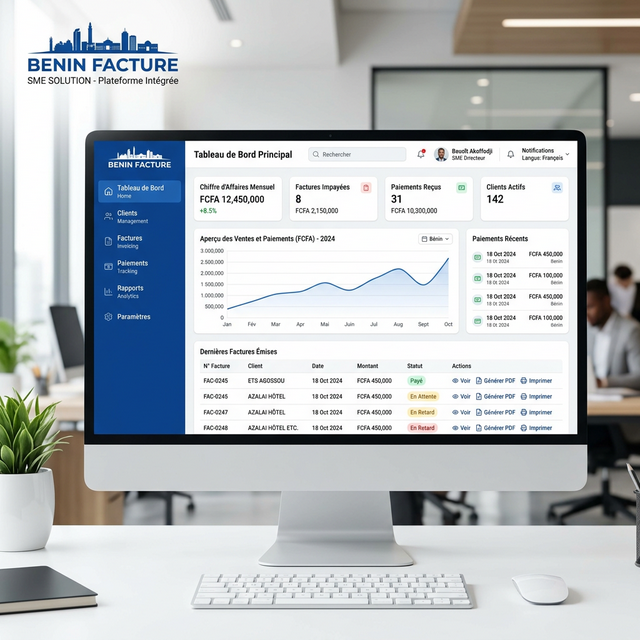

Vos équipes passent des heures sur des tâches manuelles ? Nous automatisons vos workflows pour que vous puissiez vous concentrer sur ce qui compte vraiment.
Obtenir un Diagnostic GratuitEn Afrique de l'Ouest, des centaines d'heures sont perdues chaque mois dans la copie manuelle de données, l'envoi de rapports, les relances clients et la génération de factures. Chez MDS, nous identifions ces goulots d'étranglement et les transformons en workflows automatisés.
Notre approche est pragmatique : nous commençons par les automatisations qui vous font gagner le plus de temps immédiatement. Pas de sur-ingénierie, pas de solutions gadgets. Juste des résultats mesurables dès la première semaine.
« L'automatisation n'est pas un luxe. C'est la condition de la compétitivité. »

Cartographie de vos processus actuels et identification des tâches automatisables à fort impact.
Jour 1-3Évaluation du ROI de chaque automatisation et priorisation selon le gain de temps estimé.
Jour 3-5Design des workflows visuels avec n8n, définition des déclencheurs et des actions automatiques.
Semaine 1-2Mise en production des automatisations avec tests de bout en bout et gestion des erreurs.
Semaine 2-3Suivi des performances, ajustements et ajout de nouvelles automatisations selon vos besoins.
Continu✅ Reporting 2 sem. → 1 jour

✅ 100% livraisons notifiées en temps réel

✅ -70% erreurs de facturation
Solution MDS : Pipeline automatique KoboToolbox → traitement → rapport LaTeX envoyé par email.
Solution MDS : Rappels WhatsApp automatiques pour les rendez-vous et résultats d'examens.
Solution MDS : Collecte automatique des données chantier + génération PDF envoyé aux maîtres d'ouvrage.
Solution MDS : Synchronisation automatique entre paiements Mobile Money et comptabilité.
Facturation, relances, collecte de données, envoi de rapports, notifications WhatsApp, e-mails marketing, synchronisation entre outils. Si c'est répétitif, nous l'automatisons.
Non. Elle libère vos équipes des tâches répétitives pour se concentrer sur la relation client, la stratégie et l'innovation.
En moyenne, nos clients récupèrent 2 à 8 heures par semaine dès le premier mois. Le ROI est généralement atteint en moins de 3 mois.
Automatisez intelligemment. Gagnez du temps. Concentrez-vous sur l'essentiel.